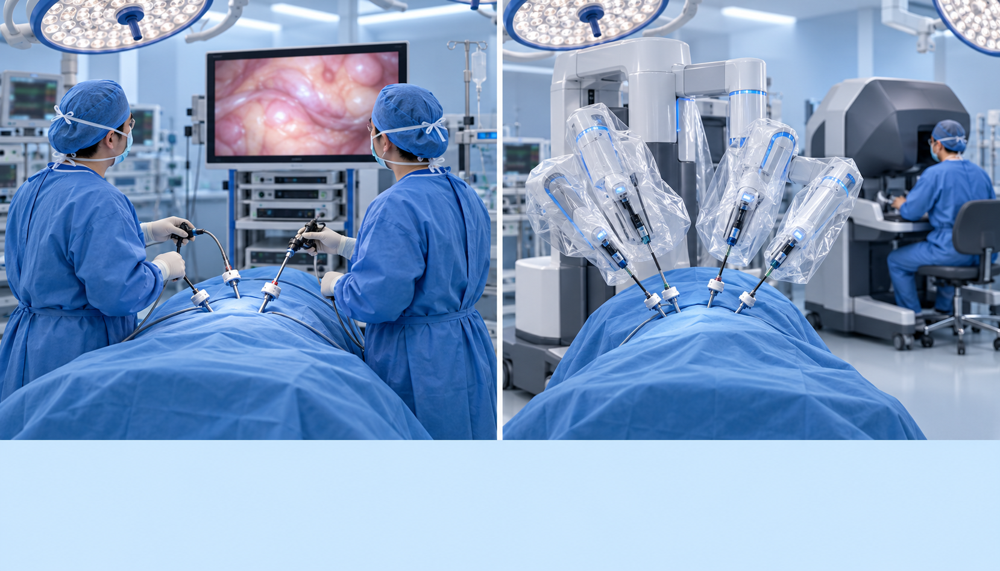
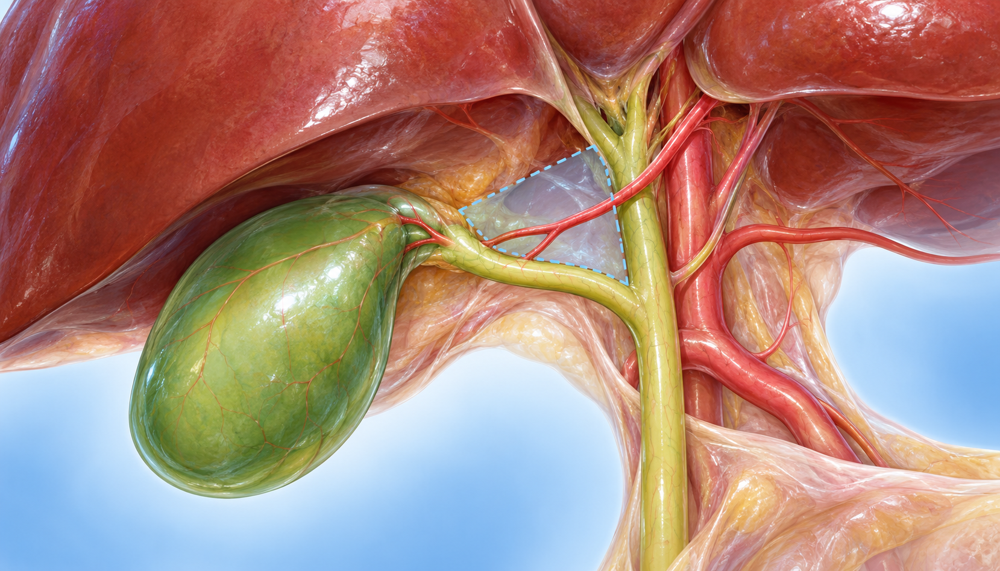
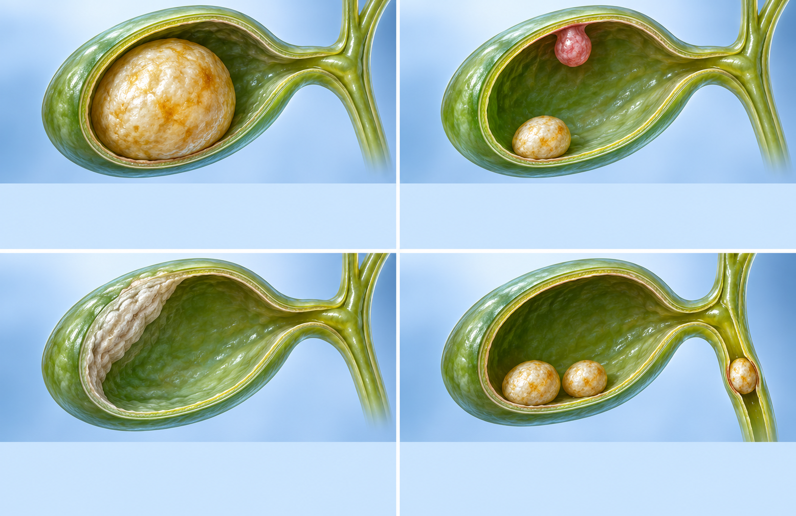

PATIENT EDUCATION · SURGERY
담낭절제술 상담,
복강경·로봇·합병증·회복
수술 방법과 합병증, 회복을 나란히 비교해 함께 결정합니다
담낭(쓸개)에 생긴 돌을 담석이라고 합니다
 얼마나 흔한가
얼마나 흔한가 생기는 데 영향을 주는 것
생기는 데 영향을 주는 것 담즙이 고이기 쉬운 상황
담즙이 고이기 쉬운 상황증상이 생기는 비율과 합병증으로 이어지는 비율을 함께 봅니다
 한 번 생기면 반복됩니다
한 번 생기면 반복됩니다특히 기름진 음식이나 과식 뒤의 윗배 통증이 대표적입니다
 담석산통(biliary colic)
담석산통(biliary colic) 급성 담낭염총담관 돌이 함께 있으면
급성 담낭염총담관 돌이 함께 있으면 뚜렷하지 않은 증상
뚜렷하지 않은 증상강의에서 소개한 일본 임상 가이드라인의 흐름입니다
증상이 없으면 관찰증상이 있으면 수술이 원칙복강경과 로봇은 모두 최소침습수술입니다
개복에서 복강경으로 연자 소속 과의 통계
연자 소속 과의 통계
복강경 수술로봇 수술담관과 혈관을 확인한 뒤에 담낭을 뗍니다
 안전 확인 시야란왜 중요한가
안전 확인 시야란왜 중요한가
연자 Q&A 답변을 그대로 나란히 놓았습니다
연자 Q&A: 비교한 결과대부분 드물지만 설명을 듣고 결정하는 것이 좋습니다
총담관 손상 출혈상처 감염 (1~2%)기구 삽입 중 손상가스 관련 (거의 드묾)
출혈상처 감염 (1~2%)기구 삽입 중 손상가스 관련 (거의 드묾)강의 자료의 수치이며, 미국은 더 높게 보고됩니다
왜 미국이 더 높나요?연자의 정리연자 Q&A: 병원 경험에 따른 일정의 예입니다
입원 기간직장 복귀강의의 결론: 무증상 담석에서 수술을 권하는 경우
병력·몸 상태
3 cm 이상 큰 담석담석 + 담낭 용종일부 석회화된 담낭 벽총담관 돌이 함께 있음담낭암 위험과 큰 돌이 일으키는 합병증 때문입니다
 담낭암 위험연자의 설명큰 돌의 합병증수술이 어려워집니다
담낭암 위험연자의 설명큰 돌의 합병증수술이 어려워집니다2022년경 유럽 가이드라인을 소개한 강의 내용입니다
위험인자와 커지는 경우명확한 기준은 없어서 진료에서 함께 정합니다
강의에서의 설명연자 Q&A: 바로 수술하지 않기도초음파에서 구분이 어려울 때강의에서 소개한 특수한 상황들입니다
도자기 담낭비만수술장기이식용혈성 질환총담관 돌 치료 경험연자 Q&A 의견이며, 실제 결정은 진료에서 함께 합니다
증상 재발 가능성약으로 녹이는 방법체중 감량 주사를 쓸 때호르몬 치료를 받을 때궁금한 점은 진료 때 함께 이야기해 주세요
핵심 정리합병증과 회복진료 때 물어볼 것수술 방법과 시기는 진료에서 함께 결정합니다